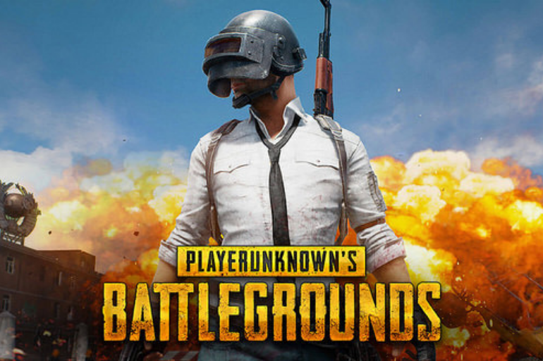
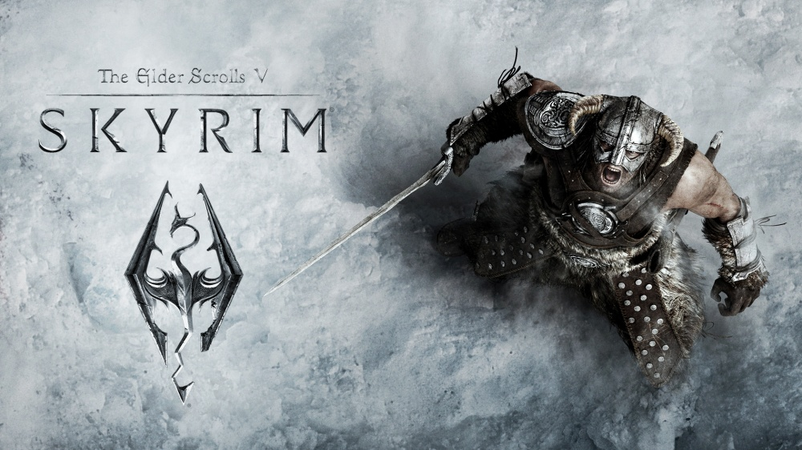

| Rank |
Game |
Why |
Image |
| 1 |
Rocket Leauge |
Rocket powered cars what more can you ask for? I have played this game since Psyonix released July 7th, 2015 and I have been playing on and off since. It is the game
I have spent the most time playing as I am pretty good at it. The premise is simple: It's soccer (futbol) but you control a rocket powered rc car that can fly. Whoever
has the most points wins, it's super fun and simple. |
|
| 2 |
Call of Duty: Advanced Warfare |
Flying with a jetpack to out maneuver your opponents, is one of the best feelings in the world and you can accomplish that with this game. Activision and Sledgehammer
Games released this Call of Duty on November 4th, 2014 and I waited for it to come out at the midnight release and I definitely don't regret it. It was the first Call of
Duty to introduce jetpacks and I loved it although many hated it. It was the first CoD I took seriously so I played some semi-pro competitive matches. It was lots of fun
and I will never forget it. |
|
| 3 |
Halo: 4 |
If you can’t tell yet I like jetpacks. This is a Modern Halo made by a company named 343i, although the original Halo games made by Bungie are masterpieces
of their own but I thoroughly enjoy 343i’s take. They added jetpacks similar to Halo: Reach and I loved it, the majority of other players disliked this change
that Halo made. |

|
| 4 |
Player Unkown Battlegrounds (PUBG) |
Player Unkown’s Battlegrounds is a Battle Royale game that was one of the first that I found to have a perfect balance between fun and
challenging. The game introduced a new mechanic that was leaning and it added to the fun and skill of the game. The premise of the battle
royal is to be the last one standing and in this game it is quite satisfying to get the winner winner chicken dinner. |

|
| 5 |
Elder Scrolls V: Skyrim |
Dragons, Magic, and Swords what’s not to like? Skyrim is a RPG made by Bethesda that is a well known favorite of many. RPG’s are one of my favorite genres
as it lets you be whoever you want. Magic and Spells are amazing and it adds so much fun to the game. This game thrives the most when mods are installed as it
adds many new elements to the game. |

|